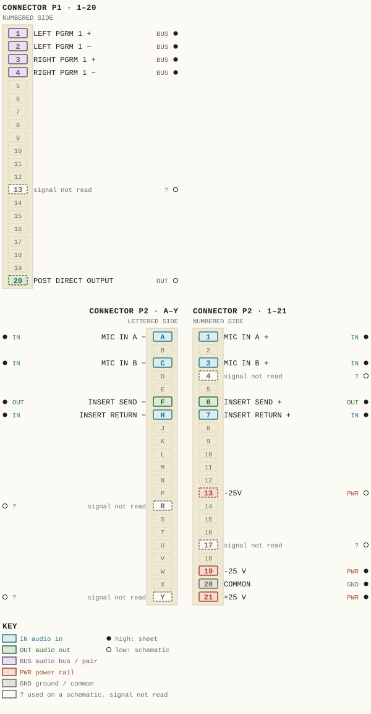
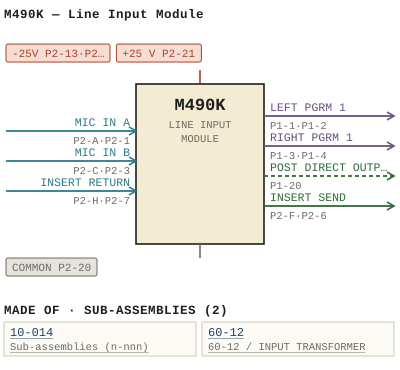

M490K — Line Input Module
| Type | module |
| Category | INPUT-PRE-AMPS |
| Try it | simulator & front panel · download package (zip) |
| Earliest dated evidence | 1983|16 — manual issue date |
| Evidence | "ISSUE 111 W :// DECEMBER 1983" in PUBLIC/Manuals + tech DOCUMENTS/Modules/Ward-Beck Systems - M490K - Line Input Module - www.WBSps.ca.pdf |
| Confidence | high |
| All years found | 1983|16 |
| Variants | M490, M490A, M490B, M490C, M490D, M490E, M490F, M490G, M490H, M490J, M490L, M490M, M490N, M490T |
| Folder | DOCUMENTS/RECENT SCANS/WBSps.ca 20210315 - Large dwg - Needs rename |
| Folder | Modules/INPUT-PRE-AMPS/M490K |
Connections and circuit (ideal SPICE model)
Drawn live from its RTO-144 connections: run the generator, turn the gain, watch the VU. Open the netlist to see how the model is built.
Pictures


M490K.pinout.svg

M490K.connections.svg 1983 - M490K - P001 - Title Page.jpg
1983 - M490K - P001 - Title Page.jpg 1983 - M490K - 490-01-011 - ENG SCLIBENT LINE INPUT MODULE.jpg
1983 - M490K - 490-01-011 - ENG SCLIBENT LINE INPUT MODULE.jpg 1983 - M490K - 490-01-011 - OFF ONISTART TIMER RESET OFF TALLY OFF STOP.jpg
1983 - M490K - 490-01-011 - OFF ONISTART TIMER RESET OFF TALLY OFF STOP.jpg 1983 - M490K - 490-02-011 - ASSIGH HIZLD SSIIO CZO RCE.jpg
1983 - M490K - 490-02-011 - ASSIGH HIZLD SSIIO CZO RCE.jpg 1983 - M490K - 490-02-011 - CMON CUE JOR.jpg
1983 - M490K - 490-02-011 - CMON CUE JOR.jpg 1983 - M490K - 490-04-022 - CHANNEI ELONALE EIRORKE IHE APOROORLALE POM PURE.jpg
1983 - M490K - 490-04-022 - CHANNEI ELONALE EIRORKE IHE APOROORLALE POM PURE.jpg 1983 - M490K - 490-04-022 - WAIUR THLE LICH EII ALO IURN CUE OFP.jpg
1983 - M490K - 490-04-022 - WAIUR THLE LICH EII ALO IURN CUE OFP.jpg 1983 - M490K - 490-06-021 - WED LACX OOTED.jpg
1983 - M490K - 490-06-021 - WED LACX OOTED.jpg 1983 - M490K - 490-06-021.jpg
1983 - M490K - 490-06-021.jpg 1983 - M490K - P002.jpg
1983 - M490K - P002.jpg 1983 - M490K - P003 - 1-1.jpg
1983 - M490K - P003 - 1-1.jpg 1983 - M490K - P004 - 1-2.jpg
1983 - M490K - P004 - 1-2.jpg 1983 - M490K - P005 - 2-1.jpg
1983 - M490K - P005 - 2-1.jpg 1983 - M490K - P006 - 2-2.jpg
1983 - M490K - P006 - 2-2.jpg 1983 - M490K - P007 - 2-3.jpg
1983 - M490K - P007 - 2-3.jpg 1983 - M490K - P008 - 2-4.jpg
1983 - M490K - P008 - 2-4.jpg 1983 - M490K - P009 - 2-5.jpg
1983 - M490K - P009 - 2-5.jpg 1983 - M490K - P010 - 3-1.jpg
1983 - M490K - P010 - 3-1.jpg 1983 - M490K - P011 - 3-2.jpg
1983 - M490K - P011 - 3-2.jpg 1983 - M490K - P012 - 3-3.jpg
1983 - M490K - P012 - 3-3.jpg 1983 - M490K - P013 - 3-4.jpg
1983 - M490K - P013 - 3-4.jpg 1983 - M490K - P014 - 3-5.jpg
1983 - M490K - P014 - 3-5.jpg 1983 - M490K - P015 - 3-6.jpg
1983 - M490K - P015 - 3-6.jpg 1983 - M490K - P016 - 3-7.jpg
1983 - M490K - P016 - 3-7.jpg 1983 - M490K - P017 - 3-8.jpg
1983 - M490K - P017 - 3-8.jpg 1983 - M490K - P018 - 4-1.jpg
1983 - M490K - P018 - 4-1.jpg 1983 - M490K - P019 - 4-2.jpg
1983 - M490K - P019 - 4-2.jpg 1983 - M490K - P020 - CD4016.jpg
1983 - M490K - P020 - CD4016.jpg 1983 - M490K - P021 - 74C76.jpg
1983 - M490K - P021 - 74C76.jpg 1983 - M490K - P022 - 74C221.jpg
1983 - M490K - P022 - 74C221.jpg 19xx - DOC - 490-03-033 - SCRATCHES LSE SELF-CLINCHING PEM FASTERNER.jpg
19xx - DOC - 490-03-033 - SCRATCHES LSE SELF-CLINCHING PEM FASTERNER.jpg M490K - P002.jpg
M490K - P002.jpgPrice history
| Year | Kind | Price | Listed as | Effective | Source |
|---|---|---|---|---|---|
| 2005|38 | used market value | 100.00 | M490K Line Input | wbsps - website ARCHIVE/WBSPS 2008/ARCHIVE/old website/PriceGuide.htm | |
| 2006|39 | used market value | 100.00 | M490K Line Input | wbsps - website ARCHIVE/WBSPS 2008/ARCHIVE/jan 2006 shell/priceguide.htm |
Pinout & connections
Each contact as its own documents name it: 17 named (15 high, 2 low confidence). An empty slot is a contact no page names. Hover a contact for its source; the table under the drawing lists them.
pinout (SVG) · connections (SVG) · pins (JSON)
Pin evidence — 22 contacts
| Pin | Signal | Kind | Confidence | Read from | Source |
|---|---|---|---|---|---|
| P1-1 | LEFT PGRM 1 | audio bus / pair | high | rto-144 | M490K.rto144.json, p. 1 |
| P1-2 | LEFT PGRM 1 | audio bus / pair | high | rto-144 | M490K.rto144.json, p. 1 |
| P1-3 | RIGHT PGRM 1 | audio bus / pair | high | rto-144 | M490K.rto144.json, p. 1 |
| P1-4 | RIGHT PGRM 1 | audio bus / pair | high | rto-144 | M490K.rto144.json, p. 1 |
| P1-13 | — | used on a schematic, signal not read | low | schematic | 1983 - M490K - P007 - 2-3.jpg, p. 1 “The FOLDBACK outputs, like the POST DRECT output, are taken from the booster amplifier output via level controls R1SO-R15I (FB1 and R1S2-R1…” |
| P1-20 | POST DIRECT OUTPUT | audio out | low | schematic | 1983 - M490K - P006 - 2-2.jpg, p. 1 “The output booster amplifier 23-24 taken before the PAN switch and routed the PoST DIRECT output P1-20,21 _ The output level dBm (voltage r…” |
| P2-A | MIC IN A | audio in | high | rto-144 | M490K.rto144.json, p. 1 |
| P2-1 | MIC IN A | audio in | high | rto-144 | M490K.rto144.json, p. 1 |
| P2-C | MIC IN B | audio in | high | rto-144 | M490K.rto144.json, p. 1 |
| P2-3 | MIC IN B | audio in | high | rto-144 | M490K.rto144.json, p. 1 |
| P2-4 | — | used on a schematic, signal not read | low | schematic | 1983 - M490K - 490-02-011 - CMON CUE JOR.jpg, p. 1 “P2-4” |
| P2-F | INSERT SEND | audio out | high | rto-144 | M490K.rto144.json, p. 1 |
| P2-6 | INSERT SEND | audio out | high | rto-144 | M490K.rto144.json, p. 1 |
| P2-H | INSERT RETURN | audio in | high | rto-144 | M490K.rto144.json, p. 1 |
| P2-7 | INSERT RETURN | audio in | high | rto-144 | M490K.rto144.json, p. 1 |
| P2-13 | -25V | power rail | low | schematic | 1983 - M490K - 490-02-011 - CMON CUE JOR.jpg, p. 1 “-25v Pz-13,7” |
| P2-R | — | used on a schematic, signal not read | low | schematic | 1983 - M490K - 490-02-011 - CMON CUE JOR.jpg, p. 1 “Timlr Pz - R AlIt” |
| P2-17 | — | used on a schematic, signal not read | low | schematic | 1983 - M490K - 490-02-011 - CMON CUE JOR.jpg, p. 1 “Pz - 17 P?-U” |
| P2-19 | -25 V | power rail | high | rto-144 | M490K.rto144.json, p. 1 |
| P2-20 | COMMON also: COMMON (rto-144) | ground / common | high | rto-144 | M490K.rto144.json, p. 1 |
| P2-Y | — | used on a schematic, signal not read | low | schematic | 1983 - M490K - Line Input Module.pdf, p. 27 “Cai P2-Y,Y < Ilen” |
| P2-21 | +25 V | power rail | high | rto-144 | M490K.rto144.json, p. 1 |
Dates found in the documents
| Year | Kind | Text | File |
|---|---|---|---|
| 1983|16 | manual issue date | ISSUE 111 W :// DECEMBER 1983 |
1983 - M490K - Line Input Module (2).pdf |
| 1983|16 | month & year | DECEMBER 1983 |
1983 - M490K - P001 - Title Page.jpg |
Physical manual inventory
| Item | Location | Status | Scanned |
|---|---|---|---|
| M490K - Line Input Module | DUPLICATE | SCANNED BUT NEEDS STICHING | |
| M490K - Line Input Module | PDF - Already scanned | ||
| M490K - Line Input Module | Recently scanned and stiched by WB |
Documents (2)
| Year | File | |
|---|---|---|
| 1983|16 | 1983 - M490K - Line Input Module (2).pdf | note |
| 1983|16 | 1983 - M490K - Line Input Module.pdf | note |
Photos & scans (33)


Sub-assemblies & parts used (2)
| Item | What | Family | Year | How we know |
|---|---|---|---|---|
| 10-014 | Sub-assemblies (n-nnn) | 1988|21 | named in its manual | |
| 60-12 | 60-12 / INPUT TRANSFORMER | Input transformers (60-n) | 1990|23 | named in its manual |
Parts list — board M490K (21 parts)
From 1983 - M490K - P011 - 3-2.jpg, page 1 (scanned); also in timelines/data/bom.csv.
| Ref | Part | Value | Manufacturer | Mfr part no. |
|---|---|---|---|---|
| M490K | LINE INPUT MODULE | |||
| C33 | Capacitor pF Aselco | 6800 | co92-MC-682M | |
| C34 | uF/25 Kemet | 2.2 | T390B225M025AS | |
| C37 | Capacitor uF/35 Kemet | T390A104M035AS | ||
| C46 | pF Aselco | 6800 | co92-MC-682m | |
| C47 | delete | |||
| C48 | Capacitor uF/25 Kemet | T390C 1O6MO25AS | ||
| C50 | uF/25 Philips | 426ETF22 | ||
| CR3 | Motorola | IN4003 | ||
| CR4 | Fairchild | 1N4148 | ||
| CR9 | Diode | |||
| CR13 | delete | |||
| CR1L | Diode Motorola | IN4003 | ||
| CR2I | Motorola | IN4003 | ||
| DS2 | LED, red Fairchild | FLV1I7 | ||
| DS3 | Light bulb Spectro | 387 | ||
| R6 | Resistor 1/4w 5% Philips | 1K2 | ||
| R26 | Resistor 1/4w 59 Philips | 22 | ||
| R76 | Resistor 1/4w 5% Philips | 15K | ||
| R98 | OOK | |||
| R110 | delete |
Named in other drawings & documents (1)
| File | Page |
|---|---|
| 19xx - RTO-144 - Module RTO-144 Jumper calculator.xlsx | 1 |
From the manuals
Each manual split into its sections. Text that is the same in many Ward-Beck manuals (warranty, address, standard notes) is kept once on the Boilerplate page and linked.
General description (4)
Description — 274 words · 1983 - M490K - P006 - 2-2.jpg, page 1
M49OK LINE INPUT_MODULE Pregram Channel Switch: 22 CMOS analog switch, serving the active switching element the PROGRAM channel The control voltage operate 22 derived from the logic circuitry within the module and coupled via CRI To switch the channel ON, this control voltage the order volts. When the control voltage drops volts, the switch wil be OFF resulting signal attenuation more than 100 dB .
Booster Amplifier Following 22 integrated circuits 23 and 24 amplify the audio signal nominal level dBm equivalent voltage) From the amplifier output the signal routed the PROGRAM ASSI GN switches SW4 and SW5 via PAN switch Sw3 and PAN Control R65 R68 Program_ Outeuts Both PROGRAM outputs and P2 are designed feed into stereo buses and each divided into left and right output.
Operation ASSIGNMENT SWiTCHES SWL SWs will result in simultaneous assignment both leit and right channels the appropriate mixing buses_ With the aid the PAN control, the signal distribution between the left and right output buses can be continuously adjusted_ Cue Channel The CUE signal originates from bridging takeoff the input the slide ttenuator Owing the high input impedance the CUE channel .
its operation has no effect the main PROGRAM channel 25 represents the audio switch for the CUE channel. Similarly 22 the control voltage for 25 generated the logic circuitry described further on The output 25 followed by the booster amplifier 26 which turn feeds the cue bus mixing network R1o1 through R104 Post Direct_Qutput The output booster amplifier 23-24 taken before the PAN switch and routed the PoST DIRECT output P1-20,21 _ The output level dBm (voltage re: 600 ohms) under nomina conditions 2-2
- source: 1983 - M490K - P006 - 2-2.jpg, p. 1
Description — 245 words · 1983 - M490K - P005 - 2-1.jpg, page 1
ML9OK LINE INPUT_MODULE provides complete remote Tine input facilities, as required The M49k Included are source selector program bus for mixing console _ assignment as wel as the channel mixing attenuator Input_and Preamplifier INPUT SELECTOR switches Sw1 and SW2 interlocked allow The mutua ection two available Iine sources An additiona the one each switch for control purposes The contact supplied networks RI-R8 R154 and R15s present 600 ohm input resistive impedance the Iine sources_ The secondary connected the preamplifier consisting 07 and 21 Input sensitivity the module may be varied through adjustment the SENSITIVITY control R25, covering by range dB .
The balanced preamplifier output appears module connector P2 , pins 6/F Inserts Two series connected, balanced insert points are made available P2 , pins 6/F = 8/J, 5/E and 7/H, operating at nominal level dBm They allow the insertion ancillary processing equipment into the mixing channel signal path such a5 compressor _ equalizer filter The provision two series connector insert points permits or the module stereo systems such as the WBS the utilization R12oo/R2000 conso these and similar applications, the model ssociated with the left and right Insertion Selectors functions (M499) both be inserted into the channel with the left channel may insert function preceding the right channel function.
Attenuator From the insert points the signal routed ATTI, balanced featuring continuous mixing range more than slide attenuator 70 dB Prior cutoff . The CUE channel feed taken from the input side the attenuator 2-1
- source: 1983 - M490K - P005 - 2-1.jpg, p. 1
Description — 265 words · 1983 - M490K - P008 - 2-4.jpg, page 1
M490K LINE INPUT_MODULE positive base potential applied either 013 and 014 depending whether INPUT SELECTOR switch Sw Sw2 depressed Effectively, 013 and 014 operate similarly two AND gates The collectors the two transistors represent the outputs the AND gates They appear at P2 _ pin 13 and These terminals are capable sinking maximum current 40 MA each from 24 volt source and may be used for muting purposes When operating the CHANNEL ON switch Sw9 separate contact closed_ ccessible P2 , pins 15/5.
This contact may be used for control signaling purposes Pin P2 isolated through diode CR3 . When connected parallel with the same output other modules, provides convenient OR gate confis gura tion, suitable reset common timer each time CHANNEL ON button depressed Channel Off Momentary operation the CHANNEL OFF switch Sw8 momentary ground closure the EXTERNAL CHANNEL OFF control input P2, pin wili result negative going pulse 28 pin and "clear" the A~section 28, producing 28p volts pin 15.
Consequently 22 will switch OFF 012 will stop conducting, causing DS3 extinguish, and the muting control outputs P2 , Pins 13 and will be disabled _ separate contact available on Sw8 and accessible P2 , pins 17/u. may be used ior "machine stop separate CHANNEL OFF tally Iamp connected P2, pins 18/V . built into SWB and Cue The B-section 28 used control the solid state cue switch 25 .
The flip-flop will change state each time negative going transition takes place Pin of 28_ Conse- quently , with each input puise, the CUE channel will alter_ nate between ON and OFF 2-4
- source: 1983 - M490K - P008 - 2-4.jpg, p. 1
- also in: 1983 - M490K - P007 - 2-3.jpg, p. 1
Circuit description (1)
Circuit Description — 248 words · 1983 - M490K - P009 - 2-5.jpg, page 1
M49OK LINE INPUT_MODULE This change state can be brought about by any one three different methods: Momentary operation the CUE switch SW12 (Q) b) Momentary ground closure the EXTERNAL CUE control input P2 pin 11 . Operation the "overpress switch SW11, located the slide attenuator beyond the "infinite position The ON status driven by the CUE channel indicated by DS2 , which Cue off An additional feature ensures that the CUE channel wili always switch OFF whenever the slide attenuator moved onto away from the "infinite" position regardless its prior state.
The control signal for this action initiated by the change state the ATTENUATOR cut switch Swio. The resultant level change, being either positive negative going, processed through 27 29 and 21o. The output produced pin 210 wil always be negative going pulse approximately 500 milliseconds duration CRI2 Passes this pulse 28 pin thereby "clearing" the B-section the flip-flop, and resulting pin of 28 switch (or remain at) volts_ turn switching the CUE switch 25 OFF AII logic control inputs are buffered and switch bounce guard against spurious noise Power_Supply_Decoupling Power supply decoupling provided by R146 R149 and c5o C53.
CR16 and CRI7 serve prevent amplifier damage in the event supply voltage reversa The decoupling network drops the +/-25 volt supply rails nomina voltage +/-18 volts. 015 decouples and filters the positive supply rail, resulting an output +12 volts operate the cMOS circuitry additon, 23 and 24 are further decoupled by R54, R55, Cz1 and C22 . 2-5
- source: 1983 - M490K - P009 - 2-5.jpg, p. 1
Parts list (text) (4)
Parts List — 99 words · 1983 - M490K - P010 - 3-1.jpg, page 1
M49OK LINE INPUT MODULE PART DESCRIPIION MFG MFG PARTNUMBER ATtI Attenuator, clw connector PEG 1550/4H35/100 Capacitor 0.01 uF 560 pF pF uF/25 uF/25 Aselco Philips cq92-MC-103M 2222-630 03561 2222-638-70479 T390C475M025AS Kemet 2.2 pF Philips 2222-638-03228 2222-638-09398 T390E157M006AS T390C106MO25A5 T390F 227M010AS 150 uF/6 uF/25 220 uF/10 Kemet Philips 2222-638-70151 2222-638-09478 T390F227M010AS T390B475M010AS 220 uF/10 uF/10 uF/10 Kemet 0.33 uF/35 uF/25 10 uF/25 10 pF 10 T390A334M035A5 T390C106MO25AS Philips 2222-638-10109 Czo uF/ 25 uF/25 33 uF/10 33 UF/10 6800 pF 426ETF47 Kemet T3900336M01OAS Aselco CR92-MC-682m 2 uF/25 uF/10 uF/10 uF/16 uF/16 Kemet T390B225M025AS T3908475M01OAS T390B685MO16AS C31 C32 uF/10 uF/10 T390B475M010AS 3-1
- source: 1983 - M490K - P010 - 3-1.jpg, p. 1
Parts List — 105 words · 1983 - M490K - P011 - 3-2.jpg, page 1
M49OK LINE INPUT MODULE PART DESCRIPT ION MFG MFG PART_NUMBER C33 C34 C35 Capacitor 6800 pF 2.2 uF/25 uF/35 Aselco Kemet co92-MC-682M T390B225M025AS T390A104MO35AS delete Capacitor C37 C38 c39 C40 uF/35 uF/35 uF/35 47 uF/25 Kemet T390A104M035AS T39OB1OMO35AS T390E476MO25A5 C41 C42 C43 C44 C45 uF/35 uF/10 2.2 uF/25 uF/35 uF/25 T390B1O5MO3SAS T3908475M01OAS T390B225M025AS T390B105M035AS T39OC 06M025AS C46 C47 C48 C49 C5o 6800 pF Aselco co92-MC-682m delete Capacitor uF/25 10 uF/25 uF/25 uF /25 W uF/25 uF/25 Kemet T390C 1O6MO25AS Philips 426ETF22 C53 c5s CRI CRZ CR3 CR4 CRS Diode Fairchild IN4148 Motorola Fairchild IN4003 1N4148 CR6 CR?
CRB CR9 CRIO delete Diode CRII CR12 3-2
- source: 1983 - M490K - P011 - 3-2.jpg, p. 1
Parts List — 87 words · 1983 - M490K - P013 - 3-4.jpg, page 1
M49OK LINE INPUT_MODULE PART DESCRAPTION MFG MFG PART NUMBER R6 R7 R8 R9 R1O Resistor 1/4w 5% 1K2 150 150 150 Philips R11 R12 R13 R14 R15 8K 15k 22k 180 220 R16 R17 R18 R19 R2o 36k 1k8 1Ok 10K R21 R22 R23 R24 R25 ) 1K 4 Potentiometer A/ B WBS 10-014 R26 R27 R28 R29 R30 Resistor 1/4w 59 22 3K9 15k 620 15k Philips R31 R32 R33 R34 R35 1K 15K 22 4k?
R36 R37 R3B R39 R4o 22 4K3 4K3 27k 10K
- source: 1983 - M490K - P013 - 3-4.jpg, p. 1
- also in: 1983 - M490K - P015 - 3-6.jpg, p. 1
Drawings (12)
Each scan with its trace laid over it: the slider runs from the scan to the vector drawing. Click one to see it large and save it as SVG, DXF, KiCad, PDF or PowerPoint.
Line Input Module Functional Diagramviewer
Off Onistart Timer Reset Off Tally Off Stopviewer
Assigh Hizld Ssiio Czo Rceviewer
Cmon Cue Jorviewer
Wed Lacx Ootedviewer
1983 - M490K - 490-06-021viewer
Eleo Iurn Iha Parilculer Cul Iuncilon Off Jtakviewer
Waiur Thle Lich Eii Alo Iurn Cue Ofpviewer
Scratches Lse Self-Clinching Pem Fasternerviewer
Read from the drawing title blocks.
| Drawing | Title | Date | Drawn by | Checked by | Iss. | Source |
|---|---|---|---|---|---|---|
| — | file | |||||
| 490-01-011 | Off Onistart Timer Reset Off Tally Off Stop | file | ||||
| 490-01-011 | Eng Sclibent Line Input Module | BD | file | |||
| 490-01-011 | Added Direcr Outputs' Revision | file p.26 | ||||
| 490-01-011 | Left Pan Insert Pan Right Right Post Direct | file p.26 | ||||
| 490-02-011 | Assigh Hizld Ssiio Czo Rce | file | ||||
| 490-02-011 | Cmon Cue Jor | file | ||||
| 490-03-033 | Scratches Lse Self-Clinching Pem Fasterner | file | ||||
| 490-04-022 | Waiur Thle Lich Eii Alo Iurn Cue Ofp | file | ||||
| 490-04-022 | Channei Elonale Eirorke Ihe Aporoorlale Pom Pure | U | file | |||
| 490-06-021 | file | |||||
| 490-06-021 | Wed Lacx Ooted | file |